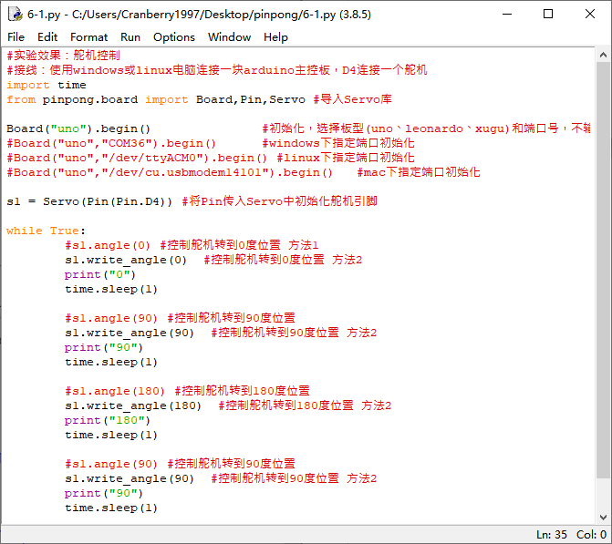

项目6 噪声检测仪¶
一、概述¶
在日常生活会有很多噪声的来源，当噪声大到一定程度，就会影响我们的身体健康。那你有想过制作一个噪声检测装置吗？在之前的项目中我们有使用过声音传感器，那如何将检测结果更直观的显示出来？请跟着本文完成项目吧。
二、项目实施¶
（1）驱动舵机¶
程序编写：¶
1、在示例程序中找到servo.py，并用IDLE打开，并修改端口号，或删去端口号，使用自动识别。
2、摁下F5运行程序，查看效果。
运行效果
舵机会以0度转到90度转到180度，再转回90度转到0度循环。
注意：在程序运行时不可以拔掉与Arduino连接的USB线，且不能关闭新弹出的Python shell运行窗口，如果拔线或者关闭运行窗口，程序功能就会停止执行。
3、如果我们想要修改舵机旋转的角度或让舵机按一定速度慢慢旋转，那我们只需要修改角度即可。示例程序为舵机从0度慢慢旋转至120度。
import time
from pinpong.pinpong import PinPong,Pin
from pinpong.libs.servo import Servo
Servo.help()
SERVO_PIN = Pin.D4
board = PinPong("uno")
servo1 = Servo(board, Pin(board,SERVO_PIN))
while True:
for i in range(120):
servo1.angle(i)
time.sleep(0.1)
（2）用舵机反馈声音数值¶
大家可能会好奇，舵机是如何实现反馈声音数值的功能。如图所示，我们可以将读取到的数值转换成舵机的角度值，然后用舵柄当作指针来反馈数值。
程序编写：¶
1、我们在之前的项目中使用过声音传感器，知道如何读取它的数值，但是声音传感器读出的数据是0~1023而我们使用的舵机的旋转角度是0~180度，所以我们需要在程序中对这个数值进行转换。
voiceRead = adcInit.read()
servoTurn = int(voiceRead * 180/1024)
在这里加入int，将数值整形，转化为舵机旋转的角度。
2、在了解了如何将声音传感器读取的数值转换为舵机可旋转的角度值之后，修改程序，示例程序如下。
import time
from pinpong.pinpong import *
from pinpong.libs.servo import Servo
SERVO_PIN = Pin.D4
board = PinPong("uno")
adcInit = ADC(board,Pin(board, Pin.A0))
servo1 = Servo(board, Pin(board,SERVO_PIN))
while True:
voiceRead = adcInit.read()
time.sleep(0.5)
servoTurn = int(voiceRead * 180/1024)
print(servoTurn)
servo1.angle(servoTurn)
三、代码分析¶
import time
from pinpong.pinpong import *
from pinpong.libs.servo import Servo
SERVO_PIN = Pin.D4
board = PinPong("uno")
adcInit = ADC(board,Pin(board, Pin.A0)) #初始化声音传感器在A0模拟引脚
servo1 = Servo(board, Pin(board,SERVO_PIN))#初始化舵机
while True:
voiceRead = adcInit.read()
time.sleep(0.5)
servoTurn = int(voiceRead * 180/1024) #转换声音数值为舵机角度
print(servoTurn)
servo1.angle(servoTurn)
四、硬件分析¶
什么是舵机？
舵机是一种可以指定控制位置（角度）的电机，可以通过程序来指定控制舵机旋转的角度。我们最常用的舵机大多最大旋转角度是0°~180°，也有90°或者其他角度的。也有比较特殊的360°舵机，但是360°舵机不能够控制其旋转到指定的角度。本项目中我们使用的是180°舵机。